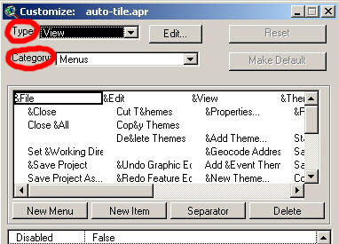
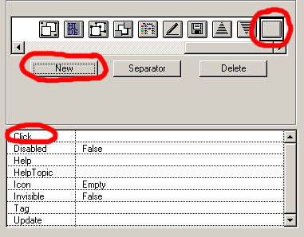

Для того, чтобы создать кнопку и подключить к ней скрипт нужно выполнить следующие операции:
1. Понять в какую группу документов должна быть подключена эта кнопка: Views, Tables, Charts, Layouts, Scripts или какую-то другую.
2. Дважды щелкнуть мышкой на панели инструментов Arcview (не важно в какой группе вы в это время находитесь). Должно открыться окно Customize
3. Затем выбрать в поле Type тип документа (View, Table, Layout и т.д.) в котором будет работать скрипт, в этом поле будут перечислены все доступные на данный момент типы. Если вы добавили кнопку в тип документа Script, то в панели кнопок View (Вида) она не появится.
*если некий тип документа создается включением определенного расширения ( то есть по умолчанию такого типа документов в Arcview нет), а вам надо добавить в нее кнопку, то, для того, чтобы это сделать, необходимо сначала включить расширение добавляющее данный тип документа.
4. В поле Category выберите нужный тип кнопки.
Кнопки бывают 2-х типов:
Отличие их состоит в том, что простая кнопка после нажатия немедленно выполняет какую-либо операцию, например открывает окно "Добавить тему", а инструмент переключает действие в особый режим, а само действие выполняется только после использования это инструмента, например инструмент Identify. Допустим вам нужно добавить простую кнопку. Следовательно выбираем категорию Buttons.
5. Определяем место где будет находиться кнопка, для этого перемещаем черную рамку которая сначала оконтуривает первую кнопку туда где мы хотим вставить новую кнопку, то есть на существующую кнопку перед ней и нажимаем кнопку New. Появляется новая кнопка.
6. Добавляем связанный с этой кнопкой скрипт. Скрипт перед тем как быть присоединен к кнопке должен быть подгружен в проект и обязательно скомпилирован. Для этого дважды щелкаем на поле Click и выбираем из появившегося окна менеджера скриптов (Sript manager) нужный скрипт.
На этом процесс подключения кнопки можно считать завершенным. Описание других полей заполнение которых не обязательно:
Соответственно, если ваша цель - сделать так, чтобы у вас в проекте была такая же кнопка как в проекте товарища, но это невозможно сделать путем загрузки соответствующего расширения, то проще всего добавить кнопку так как указано выше и присоединить к ней скрипт добытый путем указанным здесь.
Существую также экзотические случаи, когда создается новый тип документа аналогичный существующему, например расширением Automatic Tiled Layouts создается группа Tiles полностью аналогичная группе Layouts, но подключаемые к группе Layouts расширения не будут автоматически подключаться к группе Tiles, что может быть очень неудобно, например тем, что нельзя воспользоваться таким удобным расширением как Graticules and Grids, которое работает только в Layouts, но так как эти группы полностью аналогичны, то обмануть расширение можно способом указанным выше, скопировав кнопку и все ее параметры в группу Tiles из группы Layouts.
Дата создания: 30.11.2002
Автор(ы): Максим Дубинин